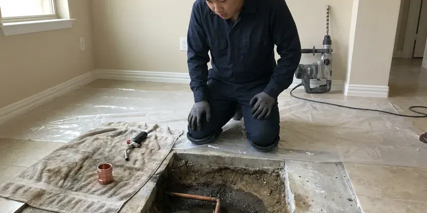

Water Heater Repair in Georgetown, KY
For trusted water heater repair across Georgetown, KY, look no further than BFK Plumbing. We handle all types of water heater issues with expertise and care.
- Upfront Pricing
- Upfront Pricing
- Fast, Local Service
- Parts Carried on Trucks

Need Water Heater Repair? Call BFK Plumbing in Georgetown, KY.
Our skilled technicians are ready to diagnose and fix your water heater issues with precision and speed.
Trusted Water Heater Repair Services Across Georgetown, KY
BFK Plumbing knows that a water heater in a Kentucky garage can face sediment from hard water and attic or garage heat that stresses components. We find the failed part, explain whether repair makes sense for the age of the tank and fix it the same day when we can.
Our expertise includes:
- Upper and lower element and thermostat testing on electric tanks
- Replacing failed heating elements and thermostats.
- Thermocouple, flame sensor and gas control valve replacement

Additional Plumbing Repair Services in Georgetown, KY
We offer expert plumbing repair services across Georgetown, KY to stop leaks, clear blockages, and keep every fixture working the way it should.


Customers
Why Choose BFK Plumbing for Water Heater Repair in Georgetown, KY?
Choosing the right plumbing company for water heater repair in Georgetown means picking a team that knows the demands of Kentucky homes. We bring local expertise and a solid understanding of water heater systems.
- Honest Recommendations, We compare repair cost against tank age and condition before suggesting anything.
- Right Parts Onboard, Common parts for major brands ride on every truck, which eliminates return trips.
- Transparent Pricing, You'll receive a clear, upfront estimate before any work begins, with no hidden fees for your water heater repair.
Citywide Coverage
We repair water heaters in homes throughout Georgetown, whether the tank sits in a garage, an attic, a utility closet or an exterior cabinet. Same-day appointments are available across town.
Experienced Team
Each technician at BFK Plumbing is not only trained in current repair methods but also understands the water heater problems common in Kentucky homes, like sediment buildup from hard water or damage from sudden temperature drops.
Safety-First Approach
Safety is our top priority for every water heater repair. We strictly follow all local and state plumbing codes, ensuring your water heater operates safely and efficiently after our service.
Trusted Certified Georgetown Plumbing Services Professionals
At BFK Plumbing, we take pride in providing licensed, certified plumbing services throughout Georgetown, KY. Backed by recognized industry credentials, our experienced plumbers combine technical skill with genuine customer care. Whether it is repair, installation, or maintenance, we follow strict safety and quality standards to deliver long-lasting results you can trust.
Call Us Now PHCC Plumbing Contractor Recognition
PHCC Plumbing Contractor Recognition Better Business Bureau (BBB) Accreditation
Better Business Bureau (BBB) Accreditation Angi Certified Pro
Angi Certified Pro ISO 9001 Quality Management Certification
ISO 9001 Quality Management CertificationExpert Water Heater Repair Services in Georgetown, KY
Electric Water Heater Repair in Georgetown
Electric water heaters commonly face issues with heating elements, thermostats, or electrical wiring. Our technicians are adept at diagnosing these problems, restoring your hot water without extensive downtime. We carry common replacement parts to ensure a fast fix for your electric unit in Georgetown.

Water Heater Pilot Light Issues in Georgetown
A pilot light that won't stay lit is a frequent problem for gas water heaters, often indicating a faulty thermocouple or gas supply issue. Our experts can diagnose and repair these components, ensuring your pilot light remains lit and your water heater functions correctly in Georgetown. We prioritize your safety first with all gas appliance repairs.
No Hot Water Diagnostics in Georgetown
When your water heater isn't producing hot water, the cause can range from a simple pilot light issue to a complex electrical problem or a major component failure. Our diagnostic process in Georgetown is careful, identifying the exact root cause so we can recommend the most effective and affordable repair, whether it's a thermostat, element, or gas valve.
Leaking Water Heater Repair in Georgetown, KY
Not every leak means a dead tank. Drips from the relief valve, drain valve or supply connections are repairable for a modest cost. A leak from the tank body or the bottom seam, however, usually means the inner lining has failed. We pinpoint the source, protect your floors and give you a straight repair or replace recommendation.
No Hot Water Service in Georgetown, KY
Experiencing no hot water can be frustrating. This can stem from various issues, including a broken heating element in electric units, a tripped circuit breaker, or a faulty gas valve in gas units. Our technicians quickly troubleshoot the problem and make the necessary repairs to bring back your hot water in Georgetown, KY.
Tankless Water Heater Repair in Georgetown
Tankless water heaters, while efficient, can develop issues like mineral buildup, igniter failures, or flow sensor problems. Our plumbers are trained on the detailed systems of tankless units, performing precise diagnostics and repairs to restore your on-demand hot water in Georgetown. We work with all major tankless brands.
Sediment Flush and Noise Repair in Georgetown
Popping, rumbling or crackling sounds usually mean a thick layer of sediment is trapping water under it and overheating the tank bottom. We drain and flush the tank, break up scale with repeated fills and check the drain valve for blockage. Flushing restores capacity, lowers energy use and helps extend tank life. We often recommend yearly flushes for homes on hard water.

Repair vs Replace Cost Comparison in Georgetown, KY
A typical repair costs $150 to $600, while a new standard tank installed often runs $1,400 to $2,800 depending on size, fuel and code updates. If your heater is under eight years old and the tank is sound, repair is generally the better value. Past ten years, or with a leaking tank, replacement usually saves money over time. We give you both numbers so you can make the call.
Reliable Water Heater Repair Near Me in Georgetown, KY
When you search for water heater repair near me in Georgetown, KY, BFK Plumbing is your reliable local choice. We pride ourselves on quick response times and being able to dispatch a qualified technician to your home or business promptly. Our team is familiar with all local neighborhoods and ready to provide expert service.
Our commitment to the Georgetown community means we're always nearby, offering prompt and professional water heater repair services. You can trust BFK Plumbing for timely arrivals, accurate diagnostics, and lasting repairs right here in Kentucky. We aim to be the first and only call you need to make.
BFK Plumbing at a Glance
- Fully licensed plumbing team covering Georgetown, KY
- 24/7 emergency service with same-day scheduling
- Upfront, flat-rate pricing before work begins
- 4.8-star rated by 309+ Kentucky customers
Georgetown Map
Georgetown Information
- Population
- 39,462
- Area codes
- Local
- Service area
- Georgetown and communities within 40 miles
- Nearby
- Lexington, Frankfort, Nicholasville, Richmond
Summer humidity often causes sweating cold-water pipes and damp crawlspaces, which can encourage mold and wood rot. Regular and expert water heater repair is important for homes in Georgetown to keep hot water consistent and prevent early system failure.
Expert Services
Trust our professionals for reliable BFK Plumbing solutions in Georgetown, KY.
Our Specialized Plumbing Services in Georgetown, KY
At BFK Plumbing, we provide a complete range of plumbing services across Georgetown, KY. From leak detection to full system installations, our team ensures fast, precise, and affordable service for both residential and commercial properties. Explore our core services below:


How Our Water Heater Repair Process Works in Georgetown, KY
Our streamlined approach guarantees a thorough diagnosis and lasting solution for your water heater problems in Georgetown, KY.
Request a Quote
Call (502) 300-9896 and describe what your water heater is doing, including the brand and age if you know them. We schedule a visit, usually the same day.
Test and Diagnose
Your plumber tests the burner or elements, controls, venting and tank condition. You receive a flat price for the repair along with an straight view of the tank's remaining life.
Repair and Verify
We replace the failed part and run the heater through a full cycle. Gas connections are leak tested and the relief valve is checked before we leave.
Frequently Asked Questions About Water Heater Repair in Georgetown
Most water heater repairs run between $150 and $600. Thermocouple and element replacements sit at the lower end, while gas control valves and tankless sensors cost more. We quote the full price before starting.
Some handy homeowners do, but mistakes with gas or 240-volt wiring can be dangerous. A licensed plumber also checks venting and relief valve operation, which DIY repairs often skip.
Repairing is usually more cost-effective for newer units with minor issues. Replacement is often recommended for older units (over 10 to 12 years), those with significant tank leaks, or when repair costs approach the price of a new unit. We'll help you choose the best option for your situation.
While some minor issues might seem DIY-friendly, we strongly recommend professional repair, especially for gas water heaters. Incorrect repairs can lead to dangerous situations like gas leaks, electric shocks, or further damage to the unit. Our licensed plumbers deliver safe and effective solutions.
Yes, our technicians are trained and experienced in repairing all major brands and types of water heaters, including Rheem, AO Smith, Bradford White, State, Reliance, and more. We carry common parts for quick repairs on most models.
Water softeners are a common upgrade in Kentucky homes, protecting tank water heaters, faucets, and appliances from mineral buildup. With hard water, once a year is a solid rule for tank heaters. Tankless units should be descaled about once a year as well, or more often if you have no water softener.
Noises like popping, rumbling, or hissing usually indicate sediment buildup at the bottom of the tank. As the heating element warms the water, it also heats the sediment, causing these sounds. A professional flush and cleaning can usually resolve this issue and improve efficiency.
Tank water heaters usually last 8 to 12 years, but hard water can shorten that without regular flushing. Water softeners are a popular upgrade in Kentucky homes, protecting tank water heaters, faucets, and appliances from mineral buildup. Tankless units can last 15 to 20 years with yearly descaling.
What People Are Saying About Our Plumbing Experts?

Laura S.
I scheduled a water heater replacement, and the team made the process smooth and affordable. The new unit works perfectly, and they cleaned up after completing the job.
Water Heater Replacement · Nicholasville, KYSofia M.
Two new toilets installed in one visit, no mess left behind, and the tech even adjusted a faucet he noticed was dripping. Fair pricing and really friendly.
Toilet Installation · Independence, KY
Patricia H.
We had a slab leak that two other companies could not find. BFK Plumbing located it in under an hour, explained our options, and the price matched the quote to the dollar.
Slab Leak Repair · Georgetown, KY
Robert G.
The trenchless sewer replacement saved our front yard. They walked us through the camera inspection footage first so we knew exactly what we were paying for.
Sewer Line Replacement · Richmond, KY
Daniel K.
A pipe burst at 11 pm and they actually answered. The plumber showed up within the hour, shut everything down, and had us back to normal the next morning. Could not ask for more.
Emergency Plumbing · Florence, KY
Emily R.
I called BFK Plumbing for plumbing repair, and the technician was fast, polite, and thorough. They explained the problem clearly and fixed it the same day. I will definitely hire them again. Highly recommended!
Plumbing Repair · Nicholasville, KY